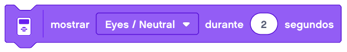
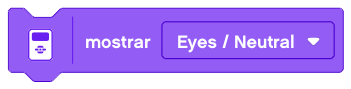
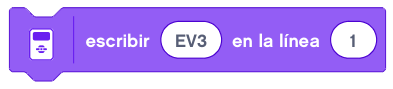
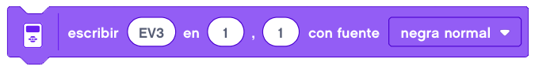
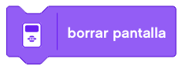
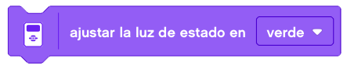

Los bloques de pantalla le permiten mostrar texto o gráficos en la pantalla del bloque EV3.
Muestra la imagen seleccionada en la pantalla del bloque EV3 durante el número de segundos especificado.

Muestra la imagen seleccionada en la pantalla del bloque EV3. La imagen permanece en la zona de visualización hasta que se sobrescriba con otro bloque, la visualización se borra o el programa se detiene.

Muestra el texto definido en la línea especificada en la pantalla del bloque EV3. La altura de la línea es
de 10 píxeles.
El texto permanece en la pantalla hasta que otro bloque lo sobrescribe, la pantalla se borra o el programa
se detiene.

Muestra el texto definido en la fuente especificada, en las coordenadas XY especificadas en la pantalla del
bloque EV3. La altura de la línea es de 10 píxeles.
El texto permanece en la pantalla hasta que otro bloque lo sobrescribe, la pantalla se borra o el programa
se detiene.

Borra la pantalla del bloque EV3.

Establece las luces de estado del bloque en el color y la opción de pulso especificados.
Las opciones posibles son verde, rojo, naranja, pulso verde, pulso rojo y pulso naranja.
